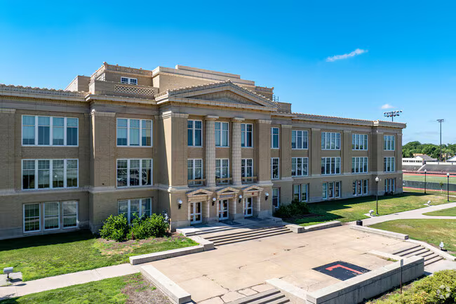

The Origin Story
Freshman year at UNL, I took CSCE155A — the first CS course in the program, a "weed-out" class. I passed with a B+ and felt like I'd learned nothing. I took it again, passed with a C, and for the first time actually understood what was happening.
I started asking the students who breezed through it what their secret was. There was no secret. They'd all taken CS in high school. It wasn't that they were smarter — their schools had given them a head start, and a lot of underfunded schools simply didn't have access to that curriculum. Before vibe coding, software engineering was one of the most reliably lucrative fields you could enter. It felt like an enormous thing to just accept.
I didn't accept it.
The Master Plan
The plan was straightforward: show up to high schools with curriculum and teach students. Close the gap.
I wrote a manifesto — a five-phase CS curriculum in Java (because "java"... "coffee," get it?), separate tracks for schools with and without existing programs, a coffee shop partnership network, resume workshops, technical interview prep, guaranteed internships, and a reward system with stickers and mugs.
The Creative Liberties
The proposal described existing interest from coffee shops. The truth: I'd run the idea by a cute barista I was trying to impress. She said it sounded cool. I recorded that as interest. The "guaranteed internships" were intentions I hadn't yet acted on. I had nothing but good intentions — the document just occasionally presented those intentions as infrastructure.
Twelve Pages and a Dream
I printed copies, marked all the coffee shops on a map, and started pitching. I didn't start small — Starbucks, Scooters, the big chains. They all sent me home. So I pivoted smaller: local, independent shops. A few actually listened, and I started getting real interest. Not commitments. Interest.
Then the goalpost moved. People wanted proof — a curriculum mockup, something that looked like a real program. And it turns out there's a lot of infrastructure required before a school lets you near their students: institutional backing, cleared mentors, liability, administrative approval. I had none of it.
The Logo
The first thing a real program needs is a face — and the logo became my first real lesson in what it means to pay for work.
I went through friends, young designers, even a pro-bono design firm connected through a friend-of-a-friend. Every version was higher quality than the last, and none of them were it. I couldn't articulate what I wanted because I didn't know — I just knew what it wasn't. People told me I was spending way too much time on something that didn't matter. Maybe. But it had become the face of everything I'd poured into this, and getting it wrong felt like getting the whole thing wrong.
Logo iterations
Eventually, from the depths of Reddit, a student in Massachusetts reached out and said he had a vision for it. He did.
The Shirts
Once the logo landed, I wanted to put it on everything. But I didn't want the shirt everyone gets for free and never wears — the one that ends up washing a car. Every program, every club, printed the same cheap shirts nobody actually wore.
So I started looking at my own drawers. Gildan, over and over. Tight fit, thin cotton — no matter how good the design, never something you'd choose to wear. Then it clicked: fraternities and sororities. At any given moment on any college campus, you can find one — Comfort Colors, heavy ring-spun cotton, slightly oversized, worn in. Students sought those shirts out.
I also noticed something about why the free ones didn't get worn: the logos tried too hard — too big, too centered, too eager to be seen. They looked like advertisements. The shirts people actually put on looked almost incidental. So I went minimal. Small logo, chest placement. Let the shirt do the work.
Comfort Colors was way out of budget for a nonprofit with no validated demand. I found a local printer, Nathan, who agreed to print at cost. I ordered a modest run and gave the first shirts to early adopters — the people who'd shown up before there was anything to show up for.

Then something strange happened: people started asking for shirts. Not because I was handing them out — because they'd seen one on someone else. Something I'd been told wasn't worth my time ended up paying a dividend. I'd gambled and gotten lucky. Sometimes going with your gut is the right call — you just better be right.
The First Real Partnerships
Three partnerships changed the shape of things. The Mill couldn't host the program but gave us free coffee and let us use their name — real weight in Lincoln. The Bay offered space in a new computer room built to double as a venue. And Lincoln High School — recognized as the lowest-income school in Lincoln — let me run an after-school program on campus.
That third one was the one that actually mattered. Tough and passionate aren't mutually exclusive, and hidden among the noise were kids from rough upbringings who genuinely wanted in on something that could change their trajectory. Everything — the manifesto, the logo, the shirts, the pitches — had been in service of getting in front of those kids.



Getting Mentors. Getting Money.


The first batch of mentors mattered more than anything — they'd set the tone for every student who walked through the door. I wrote up serious requirements: honors students, FANG experience, real credentials. For the record, I didn't meet my own requirements. But the people I attracted came with real ideas and helped shape the curriculum into something that could hold up in a room full of high schoolers.
Phase 1.1: Iterations 1 and 2
I raised a few thousand dollars — not much, but my rent was $300 a month and I was making $12 an hour at the time. It was a Nebraska fortune.


How It Ends


We had real backing, a consistent schedule, full classrooms, a 90% retention rate. I even paid our mentors — Dom (now @Microsoft) and Ryan (now @Garmin) — a "lucrative" $12 an hour. I also learned high schoolers don't really drink coffee. They like hot chocolate. But "Coding and Hot Chocolate" doesn't have the same ring to it.
Finally, the thing Coding and Coffee was always supposed to be at its core — a community — was real. Two years in, we were in deep conversations about funneling students into local internships before college. The original gap I'd lived through was finally being solved.
Then COVID hit. Within weeks, everything moved remote. The value of the program had always lived in the classroom — the coffee, the mentors, the in-person energy. None of that translated to a Zoom link.
Coding and Coffee shut down.
Reflections
Almost a decade later, thinking about Coding and Coffee still brings waves of emotion. No one saw the sweaty run-walks juggling coffee and Raspberry Pis across the Lincoln High parking lot, or the late nights rewriting curriculum when students weren't scoring well on evals.
They just saw the fancy logo and shirts.
I wouldn't have had it any other way. More than any class or internship, Coding and Coffee taught me what real impact feels like, what it costs to build — and that sometimes the world has other plans.